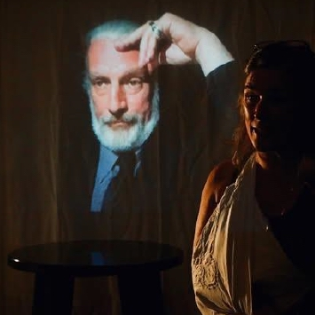
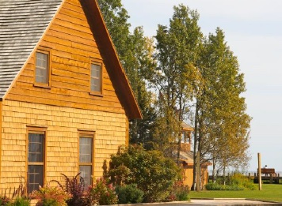
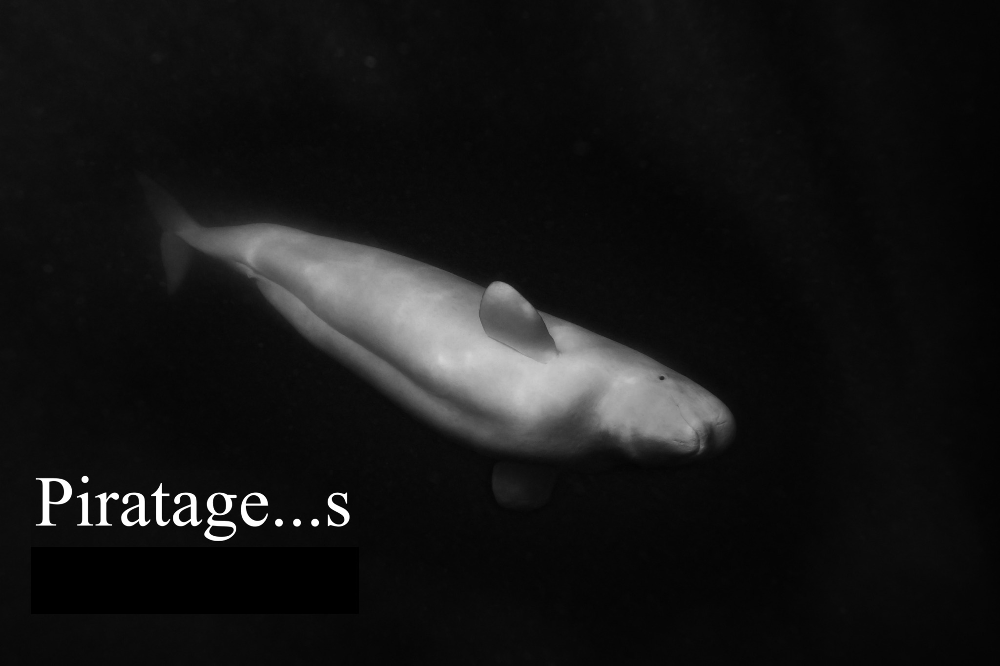

Le projet
Le spectacle d’intervention en environnement parle d’une histoire de combat face aux changements climatiques et trouve des résonnances dans l’actualité locale. Le groupe, composé d’acteurs, d’une médiatrice, de techniciens et concepteurs, réalise ce projet culturel en faisant intervenir la population locale lors de la représentation. À Maria cet été, les artistes désirent créer des interventions sur scène avec le public. Ils veulent échanger avec les gens, que l’auberge devienne un lieu de diffusion et de discussion autour des enjeux environnementaux. La culture environnementale s’installe et se partage sur le territoire.
Les aspects techniques du projet ont d’abord été exploré lors d’une résidence au théâtre du GESU en juin 2024. Le groupe veut maintenant initier des médiations avec le public sur scène avec ce laboratoire de Maria à l’été 2026. L’Auberge Mowatt deviendrait un lieu de création théâtral et de réception des publics, du 10 au 22 août.

Médiations à l’Auberge
Le but d’occuper l’auberge en est un de communication et de sensibilisation; l’outil est le théâtre. En amonts des présentations à l’auberge, le groupe offre gratuitement quatre ateliers de formation aux citoyens désireux de s’impliquer de manière créative dans l’intervention publique. Les ateliers, donnés sur place par des professionnels, les initieront à la technique du choeur : forme de jeu, où le citoyen prend la parole dans un spectacle. Les participants aux ateliers sont invités à présenter leurs travaux sur scène avec la troupe. Ils apporteront leurs propres réflexions en salle.
L’Auberge se prête aux partages culturels et les artistes sauront la mettre en valeur avec les citoyens. Les membres du groupe y ont travaillé souvent et longtemps. En offrant cet espace de rencontres, Maria reçoit public et artistes autour d’un même sujet. Les ateliers théâtre et le spectacle d’intervention au Parc du Vieux-Quai, en échange d’un cachet de représentation aux artistes, met en valeur la scène locale et offre une tribune originale pour s’exprimer sur un sujet sensible et pertinent.

La pièce
Diffusant des entrevues avec des citoyens de Maria, Carleton, Bonaventure et d’ailleurs au Québec, le spectacle original a été écrit par la comédienne Cathie Belley et le poète Bilbo Cyr. Des images de la faune aquatique des artistes gaspésiens Maryse Goudreau et Olivier D. Asselin, sont aussi diffusés dans ce théâtre à processus documentaire.
Piratage(s) explore la démesure du sentiment éco anxieux en passant par la voix et les actions d’un protagoniste activiste. Le personnage principal lutte pour que le pouvoir citoyen sur l’action climatique ne soit pas rompu. Théâtre à processus documentaire, le contexte de la pièce rappelle des luttes menées au Québec pour la protection de l’environnement en donnant la parole à des citoyens impliqués dont certains extraits sont utilisés sur scène. Piratage(s) est une fiction inspiré de faits réels dans lequel le public est amené à prendre la parole.